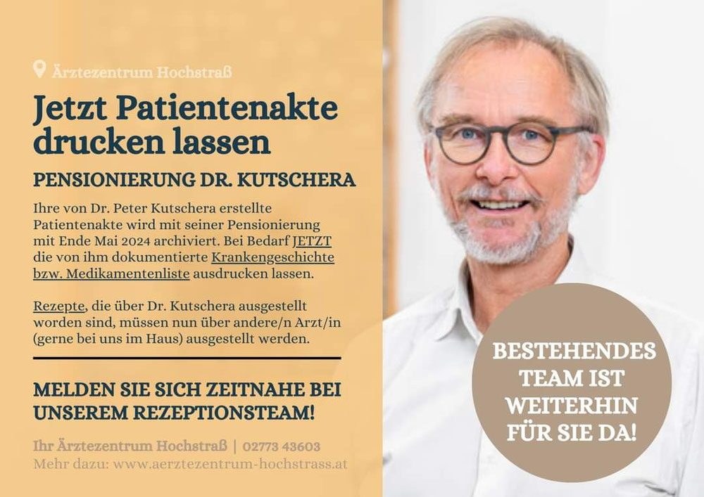

Dr. Magdalena Mischkounig
Fachärztin für Allgemein- und Familienmedizin
Ganzheitliche Ausrichtung mit Fokus auf Vorsorgemedizin und Emotionscoaching.
Termine nach Vereinbarung, meist DO
Wir sind sehr bemüht, unsere Patient:innen umfassend zu betreuen. Hier sehen Sie im Überblick, welche Wahlärzt:innen bei uns im Haus ordinieren.
Fachärztin für Allgemein- und Familienmedizin
Ganzheitliche Ausrichtung mit Fokus auf Vorsorgemedizin und Emotionscoaching.
Termine nach Vereinbarung, meist DO
Facharzt für Innere Medizin
Endokrinologie, Diabetologie und Schilddrüse.
Termine nach Vereinbarung
Facharzt für Innere Medizin und Rheumatologie
Rheumatologie, Ernährungsmedizin und Gesundheitswissenschaft.
Ordinationstag: DO
Facharzt für Neurologie
Neurologische Abklärung und Betreuung.
Termine nach Vereinbarung
Fachärztin für Gynäkologie und Geburtshilfe
Frauenheilkunde und Geburtshilfe. Online-Terminbuchung verfügbar.
Ordinationstage: MO, MI
Facharzt für Urologie
Urologische Diagnostik und Betreuung.
Ordinationstage: DI, SA
Facharzt für Haut- und Geschlechtskrankheiten
Dermatologie, Hautarzt-Check auch am Ordi-Samstag.
Termin nach Vereinbarung
Facharzt für Lungenerkrankungen
Pneumologische Abklärung und Lungenfunktion.
Ordinationstag: SA
Facharzt für Hals-, Nasen- und Ohrenerkrankungen
HNO-Heilkunde für Erwachsene und Kinder.
Ordinationstag: MI
Facharzt für Allgemein-, Viszeral- und Gefäßchirurgie
Chirurgische Beratung und Abklärung. Online-Terminbuchung verfügbar.
Termine nach Vereinbarung
Facharzt für allgemeine und plastische Chirurgie
Allgemeine und plastische Chirurgie.
Termine nach Vereinbarung
Gründer des Hauses – im Ruhestand
Der Gründer des Ärztezentrums hat seine Ordinationstätigkeit mit knapp 70 Jahren beendet. Die von ihm erstellten Patientenakten wurden mit Ende Mai 2024 archiviert. Das bestehende Team ist weiterhin für Sie da.
Kein Ordinationsbetrieb
„Als Wahlärztin für Allgemeinmedizin mit ganzheitlicher Ausrichtung begleite ich Menschen dabei, ihre Gesundheit aktiv zu gestalten – körperlich, emotional und mental.“
„Ich bin überzeugt, dass wir Gesundheit neu denken dürfen. Daher ist es mein Ziel, nicht nur Krankheiten zu erkennen, sondern Gesundheit zu fördern. In meiner Arbeit verbinde ich schulmedizinisches Wissen mit modernen, ganzheitlichen Methoden. Mein Vorsorgeangebot ist speziell für diejenigen, die ihrer Gesundheit mit mehr Tiefe begegnen möchten.“
Die Grundlage der Untersuchung bilden schulmedizinische Messmethoden wie EKG, Spirometrie (Lungenfunktion) und ABI (Durchblutung). In zwei aufeinander aufbauenden Terminen – Gesamtdauer rund 70 bis 90 Minuten – geht es um mehr als Laborwerte: um Zusammenhänge zwischen Körper, Geist und Alltag.
Termine finden ausschließlich nach Vereinbarung während des Praxistages (ein Tag pro Woche) statt. Krankmeldungen, Überweisungen und Rezeptausstellungen sind nur im Rahmen einer laufenden Betreuung und während des Praxistages in Hochstraß möglich.
Bei Terminstorno bitte mindestens 24 Stunden vorher Bescheid geben – sonst werden 100 % des Behandlungshonorars in Rechnung gestellt.
Der Mediziner aus Leidenschaft hat sich mit knapp 70 Jahren in den wohlverdienten Ruhestand begeben. Sein Lebenswerk – das Ärztezentrum Hochstraß, das er gemeinsam mit seiner Frau Mag. Elke Gold gegründet und aufgebaut hat – lebt mit den rund 20 Ärzt:innen und Therapeut:innen in Hochstraß weiter.
Die von Dr. Kutschera erstellten Patientenakten wurden mit Ende Mai 2024 archiviert. Rezepte, die über ihn ausgestellt worden sind, werden seither über andere Ärzt:innen – gerne im Haus – ausgestellt. Für Fragen ist das Rezeptionsteam unter +43 2773 43603 erreichbar.
Die ganze Geschichte lesen